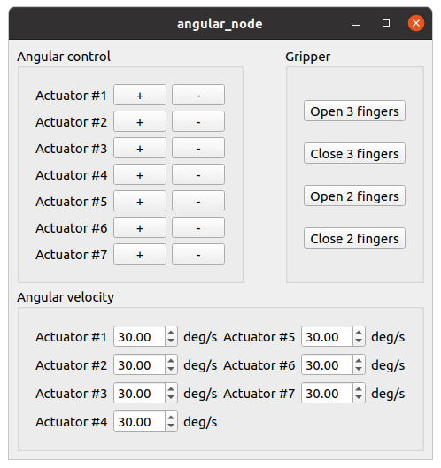
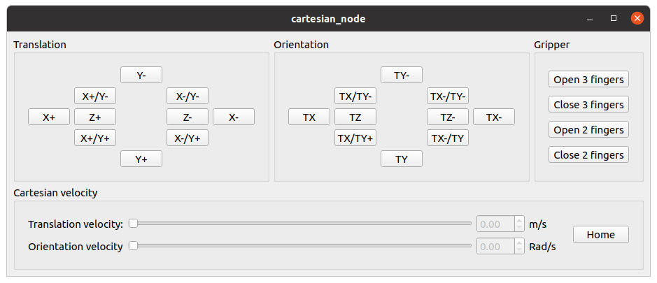
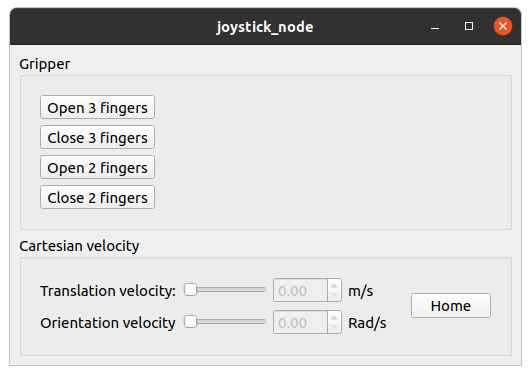

実行¶
ここでは，予め用意している launchファイル を使って”Gen2”モデルをROSのPub/Sub機能を用いて動かします。
関節位置制御（Joint Position Control）によるGen2の操作¶
関節位置制御でGen2を操作する場合、下記のコマンドでサンプルを起動することができます。
roslaunch choreonoid_ros_gen2 gen2_joint.launch
gen2_joint.launchを起動すると、Choreonoidと下図の操作画面が同時に表示されます。

画面内の項目は以下のようになっています。
- Angular control: 「＋」または「−」のボタンをクリックすることで、Gen2の各関節を動かすことができます。
- Angular velocity: Gen2の各関節の角速度を指定できます。
- Gripper: グリッパを開閉する信号を送信します。
Note
Gripperの項目は、実機のGen2を操作するためのものです。そのため、シミュレーション中にボタンをクリックすると、実機からの応答待ち状態となり、画面が操作できなくなりますのでご注意ください。
デカルト位置制御（Cartesian Position Control）によるGen2の操作¶
デカルト位置制御でGen2を操作する場合、下記のコマンドでサンプルを起動することができます。
roslaunch choreonoid_ros_gen2 gen2_cartesian.launch
gen2_cartesian.launchを起動すると、Choreonoidと下図の操作画面が同時に表示されます。

画面内の項目は以下のようになっています。
- Translation: ボタンをクリックすることで、Gen2の手先をデカルト座標系のX、Y、Z軸に沿って動かすことができます。
- Orientation: ボタンをクリックすることで、Gen2の手先をGen2の手先のローカル座標を基準にして回転させることができます。
- Cartesian velocity: Gen2の手先の並進速度、角速度を指定できます。
- Gripper: グリッパを開閉する信号を送信します。
操作を始める際は、Cartesian velocityに任意の速度に設定してください。（安全のために初期値が0に設定されています。)
Note
Cartesian velocityの項目内の「Home」ボタンは、実機のGen2を操作するためのものです。そのため、シミュレーション中にボタンをクリックすると、実機からの応答待ち状態となり、画面が操作できなくなりますのでご注意ください。
Note
Gripperの項目は、実機のGen2を操作するためのものです。そのため、シミュレーション中にボタンをクリックすると、実機からの応答待ち状態となり、画面が操作できなくなりますのでご注意ください。
ジョイスティックによるGen2の操作¶
ジョイスティックでGen2を操作する場合、下記のコマンドでサンプルを起動することができます。
roslaunch choreonoid_ros_gen2 gen2_joystick.launch
gen2_cartesian.launchを起動すると、Choreonoidと下図の操作画面が同時に表示されます。

画面内の項目は以下のようになっています。
- Cartesian velocity: Gen2の手先の並進速度、角速度を指定できます。
- Gripper: グリッパを開閉する信号を送信します。
操作を始める際は、Cartesian velocityに任意の速度に設定してください。（安全のために初期値が0に設定されています。)
Gen2の操作方法は以下のとおりです。
DUALSHOCK 4の場合
- 左スティック(L_STICK) -> Gen2の操作（Translation mode: Gen2の手先の並進(X, Y), Wrist mode: Gen2の手先の回転(Pitch, Yaw)）
- 方向キー（十字キー） -> Gen2の操作（Translation mode: Gen2の手先の並進(Z), Wrist mode: Gen2の手先の回転(Roll)）
- ○ボタン -> Translation modeとWrist modeの切り替え
Note
Gripperの項目は、実機のGen2を操作するためのものです。そのため、シミュレーション中にボタンをクリックすると、実機からの応答待ち状態となり、画面が操作できなくなりますのでご注意ください。